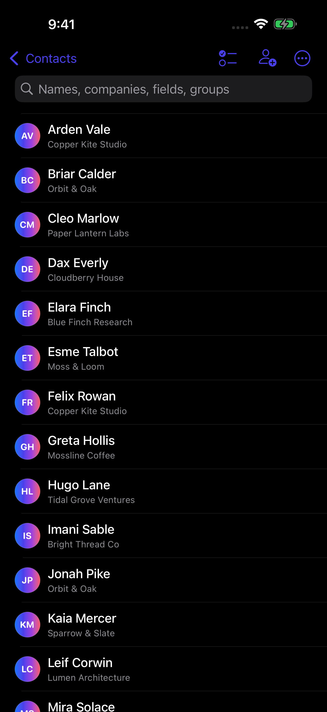
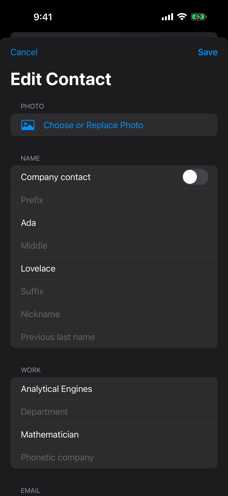
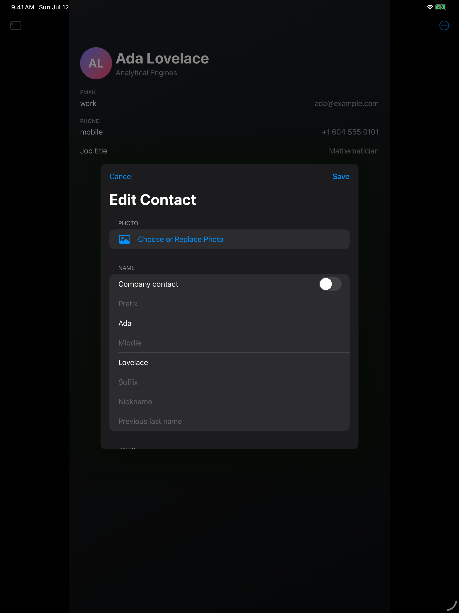

One subscription for Mac, iPhone, and iPad. Cancel anytime.

● Apple
G Google
■ Microsoft
Contacts, reconsidered
We love Apple. That is why Contacts has always puzzled us.
Names, numbers, addresses, birthdays, and relationships are deeply personal, genuinely useful data. They deserve a tool with the same care and craft as the devices they live on.
Fast enough to become a habit
Ten thousand contacts. One instant answer.
Search names, companies, notes, numbers, email addresses, groups, and accounts as quickly as you can type. The index lives on your device and stays useful offline.
< 50 mslocal search target
< 1 secuseful UI at 10,000 contacts
63.07 msverified worst delay across 300 stress-test scrolls
Interactive search previewOffline
Sample local index8.4 ms
Try a name, company, email, phone number, group, or account.
All your accounts, without the mystery
Together, never blurred.
Apple, Google, and Microsoft contacts share one focused workspace while keeping their identity. Ownership stays visible. Refresh when you choose, then review outgoing changes account by account.
● Apple ContactsG Google Contacts■ Microsoft personal and work
Review before sendOwnership stays visible
Super simple by design
Power when you need it. Simplicity everywhere else.
It is right there in our name. Every detail is designed to make a powerful address book feel clear, calm, and obvious. Super simple to use and private by design.
01
Make groups do the work.
Create standard groups for direct control and nested smart groups that update from your rules. Save structured searches, then move hundreds of people with bulk membership tools.
CompanyisAnalytical Engines
Phoneis not emptyAny label
24 peopleupdated live
02
Duplicates, without drama.
Compare likely matches. Link locally, keep both, or never match again. Provider records are never silently merged or deleted.
GR
Grace HopperApple
92% match
GH
Grace M. HopperMicrosoft
03
Edit the whole story.
People and companies, custom labels, photos, nicknames, job details, addresses, birthdays, relationships, websites, social profiles, messaging accounts, preferred values, and notes.

The complete 1.0
No hidden tier. No shortened mobile edition.
01 Search and workspace
Instant local-first search across every contact field, group, and account
Structured queries, saved searches, compact lists, and sortable tables
Native three-pane Mac workspace, adaptive iPad split view, and fast iPhone navigation with quick actions, scanning, and capture
One-click field or formatted-card copying, drag and drop, multi-selection, batch editing, and undo
02 Accounts and safe sync
Apple Contacts integration
Multiple Google Contacts accounts through the Google People API
Multiple Microsoft personal and work accounts through Microsoft Graph
Clear ownership rules, per-account outbound policies, and queued edits that survive incoming refreshes
03 Groups and data quality
Standard groups, nested smart-group rules, and saved searches
Drag-and-drop and bulk group membership changes
Reviewable duplicate detection with local-link, keep-both, and never-match decisions
Import validation, data-quality warnings, and safe cleanup previews
04 Import, export, recovery, and print
vCard and CSV import with preview, field mapping, validation, duplicate detection, and destination selection
vCard, configurable CSV, and formatted-text export
Recently Deleted with restore and recoverable bulk operations
Contact sheets, labels, and envelope printing on Mac
05 Alfred and Raycast
Search the same private local index from either launcher
Preview results, copy a preferred detail, start an email or call, and open the selected contact
No second contact database and no access to provider credentials
06 Privacy and reliability
Offline search and local-first editing that never waits on a network request
OAuth credentials in Keychain and provider traffic sent directly to the provider you choose
Private iCloud sync for supported app metadata such as smart groups and link decisions
Light, Dark, and Automatic appearance across Mac, iPhone, and iPad
No ads, tracking, analytics SDKs, or contact-data sales
Your launcher just learned everyone
Shortcut in. Contact found.
Search the same private local index from Raycast or Alfred. Find a person, copy a detail, start an email or call, and open the full contact without breaking your flow.
● No second contact database. No provider credentials.
⌘ Space
Super Simple Contacts for Raycast0.4 ms local
Made for each Apple screen
One address book. Three native experiences.
A dense, keyboard-friendly workspace on Mac. An adaptable split view on iPad. Fast stacked navigation on iPhone.

Privacy is not an upgrade
Your contacts are yours. Full stop.
No ads. No tracking. No sale of contact data. Search happens on your device, credentials stay in the system Keychain, and supported sync connections go directly to Apple, Google, or Microsoft.
Local search that works offline
Provider traffic only when you ask
Review every outgoing change
One subscription, every device
Try the full address book for 14 days.
No feature gates during your trial. Choose monthly or save with annual billing when the trial ends.